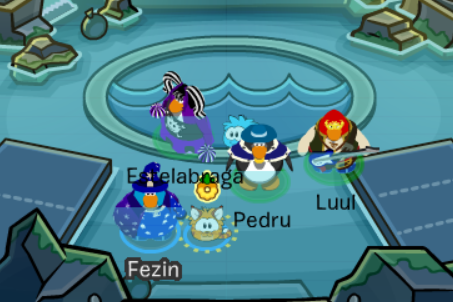

Club Penguin CPPS

CPPS Pepino é um projeto em andamento do Club Penguin AS3 e AS2. Que ja esta disponivel para acesso a versão AS3, que para acessar é preciso entrar na rede Radmin do servidor que é disponibilizada no servidor do Discord pelo Felipe, caso vc ja tenha acesso a rede clique no botão "Jogar".
Lembrando que é necessario baixar um navegador especifico para rodar o flash player disponibilizado no botão abaixo.
